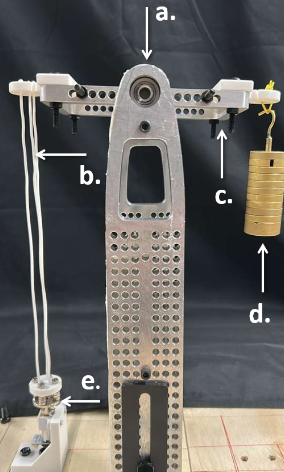
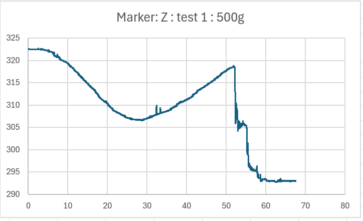
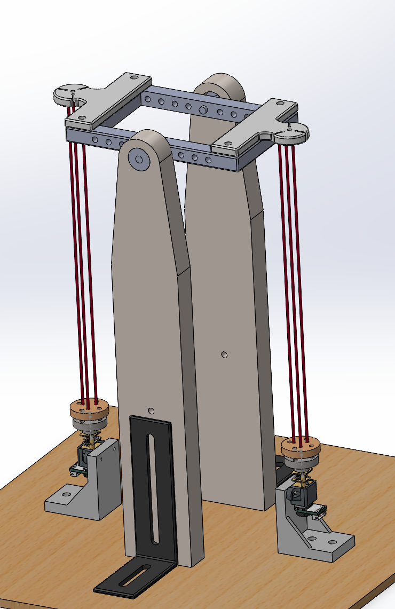

Experiments
Actuation Tests (Antagonistic Demonstration)
This page documents the qualitative actuation experiment used to demonstrate that Twisted Elastic Actuators (TEAs) reproduce the key contraction behavior of traditional Twisted String Actuators (TSAs).
Purpose of the experiment
The objective was to verify functional similarity between TEAs and TSAs in a controlled antagonistic-style actuation setup. This test was not designed to benchmark ultimate load-bearing performance.
Test apparatus
- Pivot-based loading mechanism .
- Two parallel vertical columns supporting a symmetric pivoting beam assembly.
- Rectangular beam/frame mounted on a fulcrum, permitting full 360° rotation.
- Opposing frame ends carrying the actuator string bundle and a 250 g load.
- Actuation test setup: a: Parallel vertical columns b: Strings for actuation c: Rectangular frame d: Load e: motor with an attached rotary encoder.

Observed behavior during actuation
- As strings twisted, the TEA lifted the load and generated measurable axial contraction.
- Contraction continued until onset of multicoiling, after which string failure occurred.
- Motion-capture tracking recorded trajectory and contraction along the principal actuation axis z-axis.
- The contraction resembles the force profile from the force tests

Motion-capture summary
- Maximum contraction along z-axis: 15 mm.
- Lateral deviation along x-axis: ~2 mm (due to no lateral constraints).
- y-coordinate remained effectively constant.
- Sharp position changes in x and z corresponded to onset of multicoiling.
Antagonistic setup (next step)
This is planned work.
Instead of using a hanging weight, the next configuration will use a three-string antagonistic setup, where one actuator string bundle opposes the other to produce bidirectional behavior.
- Replace the 500 g external load with the second opposing string path.
- Maintain symmetric routing around the pivot frame.
- Compare contraction trajectory and observe hysteresis.
